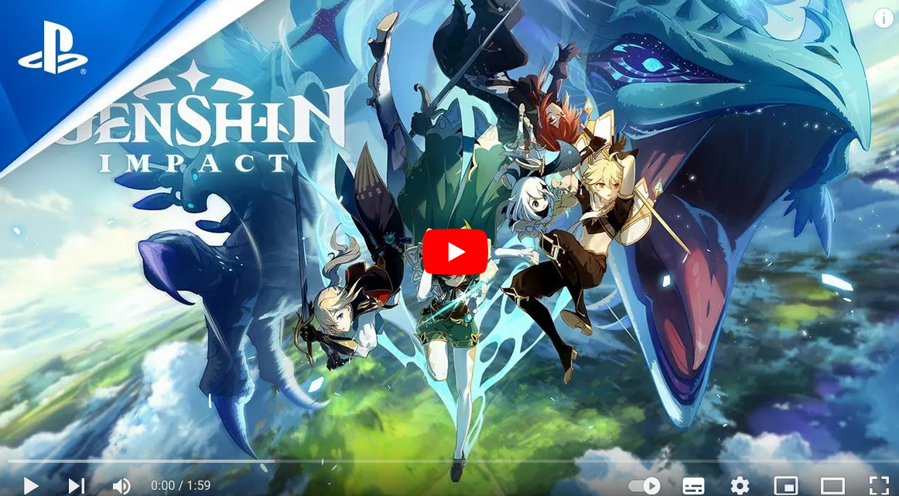

| Synopsis | |
|
Dans un monde fantastique nommé Teyvat, une sœur et un frère se retrouvent séparés par une déesse inconnue. Le joueur commence son aventure en tant que Voyageur ou Voyageuse dont l'origine est inconnue, à la recherche de l'autre. Au cours de l'aventure, le joueur a la possibilité de contrôler plusieurs personnages, chacun ayant une personnalité unique et des capacités élémentaires différentes selon le personnage. Pendant sa quête, le joueur découvre l'histoire de ce nouveau monde à travers celles des personnages au fur et à mesure que le jeu évolue. |
|
| Système de jeu | |
|
Le jeu propose une carte du monde ouverte avec divers terrains, que le joueur peut explorer en marchant, en escaladant, en nageant et en planant. De nombreux objets et lieux importants sont répartis sur toute la carte3. Le joueur peut contrôler jusqu'à quatre de ses personnages à la fois. En accomplissant des quêtes pour progresser dans l'histoire, le joueur a la possibilité de déverrouiller jusqu'à 48 personnages jouables. |
|
| Généralités | |
|
Chaque personnage possède trois compétences de combat uniques : une compétence normale et deux compétences spéciales. La compétence normale peut être utilisée à tout moment, alors que les compétences spéciales ont un coût en énergie, obligeant le joueur à accumuler d'abord suffisamment d'énergie élémentaire4. Ces compétences ont un délai de récupération après utilisation. Celles-ci se diffèrent par leur "puissance". En effet, une des deux prend plus de temps à récupérer mais inflige plus de dégâts. |
|
| Système d'éléments | |
|  |
Une des caractéristiques qui rend le jeu unique est le Système d'Éléments. Sept types d'éléments sont disponibles, à savoir le vent (Anémo), le feu (Pyro), la foudre (Electro), l'eau (Hydro), la glace (Cryo), l'énergie de la nature (Dendro) et la roche (Géo). Les joueurs doivent tirer parti des synergies élémentaires, pour tuer des monstres ou accomplir des quêtes. Par exemple, les compétences de feu peuvent permettre de réduire en cendres le bouclier en bois de l'ennemi. Les compétences de glace peuvent être utilisées pour geler l'eau et ainsi traverser plus facilement une rivière. |